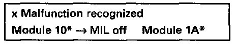

DTC Memory, Mode 3
- Press button -3- to select mode 3 DTC memory.
Display will appear as shown
Module 10* or 1A* will be activated (alternately):
- Module 10 = Engine Control Module (ECM) -J220-.
- Module 1A = Transmission Control Module (TCM) -J217-.
- MIL OFF/ON = MIL switched OFF or ON.
- Press -> button, any stored DTCs will be displayed in sequence.

Display will appear as shown (example)
- Press -> button.
NOTES:
- If two or more DTCs are stored, the cause of the malfunction could be attributed to the second or following malfunction. Interpreting stored DTCs. Diagnostic Trouble Code Descriptions
- After malfunctions have been repaired, clear DTC memory, Mode 4: Clear DTC Memory and create the readiness code again. Readiness Code - Reading / Creating
- Press -C- button to exit mode 3.